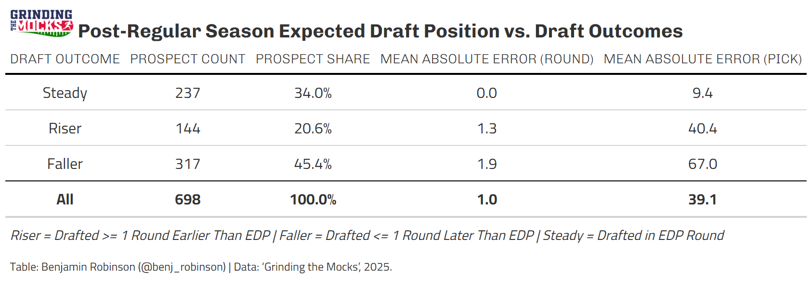
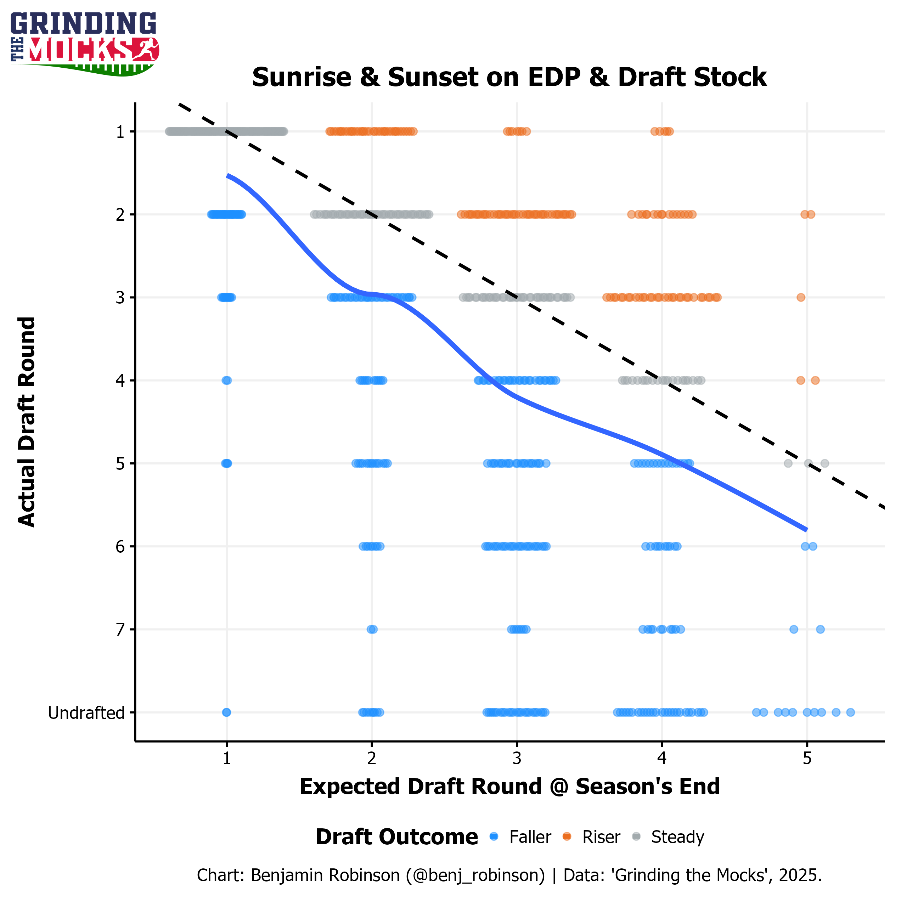
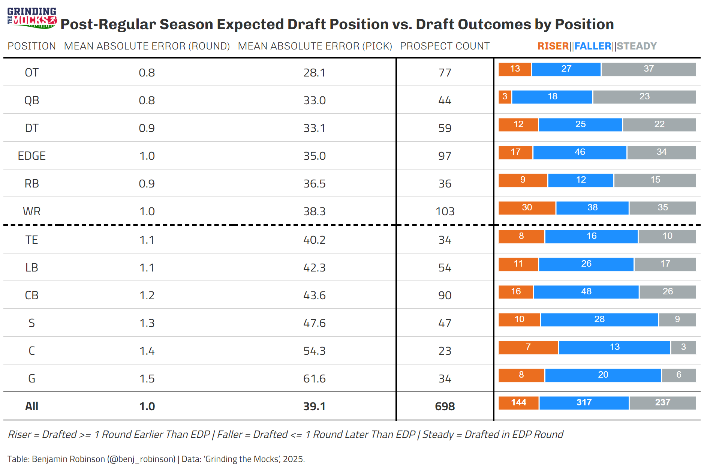
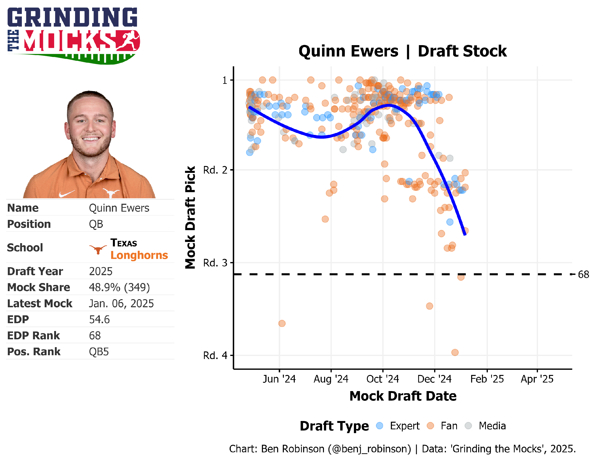
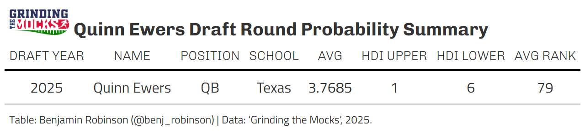
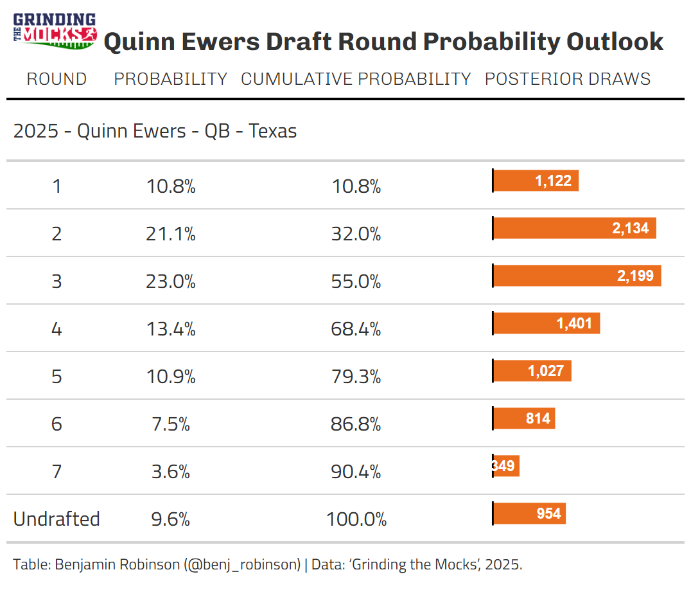

Setting the Table
Timing is (mostly) everything. Is it ironic that I have decided to start writing about the NFL Draft again in the bleak midwinter of the NFL Draft season? Yes, but I have a good reason, I swear! With the regular season behind us, players have been preparing to play in (marginally meaningful) bowl games and (truly historic) playoff games. So, although we are where we are, I think it’s also the perfect time to investigate what this time in the cycle means for the draft instead of just shrugging our shoulders at how the football gods have wronged us. I also deeply believe that longer-form writing is fundamental to sharing ideas and since the demise of Football Outsiders (RIP), I haven’t been writing much. It also feels nice to have an outlet for my earnest thoughts about the draft and Grinding the Mocks data. Writing, I have missed thee!
While college football is cooling down on the field, it is heating up off of it. Draft prospects have some very significant decisions to make about their football futures. Should they sacrifice their remaining eligibility and jump into the professional ranks or continue to develop in college to maximize their financial opportunities (such as finishing their degree or through NIL) and improve their draft stock? We all agree that players should make this decision with the same care they used when signing their letters of intent to join their college teams.
When making this choice, there are many data points to consider. For example, one high-quality piece of data is what the NFL’s College Advisory Committee shares about a player’s draft stock, but that’s only if you are an underclassman. However, players are likely trying to wade through a sea of information from the draft industrial complex and the broader football world. This made me think: if you’re a player making that decision, what could Grinding the Mocks data tell you, your family, and your representation about what the best choice is for you?
Appetizers
Let’s dig into the data, first at a macro level and then at a micro level focusing on Texas QB Quinn Ewers, who just declared for the NFL draft today and had probably one of the most difficult declaration decisions to make in the entire draft class. Here is how draft outcomes shook out for all the prospects with a large enough sample size of mock drafts/big boards to be eligible for an Expected Draft Position (aka EDP), 10 different mocks from 10 different draftniks, at this point in the draft cycle from 2019 to 2024 with the range of draft outcomes grouped as:
Riser - Drafted a Round or more earlier than their EDP Rank’s Round
Faller - Drafted a Round or more later than their EDP Rank’s Round
Steady - Drafted in the same Round as their EDP Rank’s Round

Excluding prospects who decided to return to school (recognizing the selection bias of those players, who make up about 20% of the players in the sample), the average prospects’ draft stock is off by only about one round on average (assuming that Undrafted Players are all drafted in “Round 8”) or by about 40 picks up or down. The plurality of players (about 45%) is grouped as a “Faller”, which makes sense since there is a lot more room to fall in the draft than there is to rise, and on average those players’ draft stock drops by about 2 rounds of draft capital by the time of the draft. The next largest group of prospects is in the “Steady” bucket, which makes up about 33% of the prospect pool and represents those whose stock is fairly static, with those players only moving up or down by about 10 picks from their current EDP. The smallest group of the bunch is the “Riser” group, which makes up about 20% of prospects, with those players’ draft stock growing by about a round and a half by the draft.

Per the chart above, in a perfect world we’d like to have our solid blue line as close to the black dotted line as possible and at this point in the draft cycle we are overprojecting players by about a round on average as we showed in that first table and we can see the stronger accuracy in the early rounds but the difference seems to be somewhat consistent across the years of data at this point in time through the past 6 draft classes.

Below the surface, it’s exciting to see that the positions that fell below the MAE of players with enough sample size to be Grinding the Mocks EDP-eligible at this point in the draft process are: QB, the premium positions of EDGE and OT, the offensive skill positions outside of TE (RB, and WR), and DT, a position of rising prominence and importance across the NFL.
Main Course
Now, let’s return our focus to our hero, Texas’s Quinn Ewers, who announced today his intention to enter the 2025 NFL Draft. As a recruit, Ewers was the highest-rated player in his high school class by the 247Sports Composite Rankings and signed with Ohio State. Unfortunately for him, current Houston Texans QB C.J. Stroud was blocking his path to playing time so he transferred to Texas where he has been the starter for the larger part of three seasons and led the Longhorns to the College Football Playoff in back-to-back years.

Now let’s dig into Grinding the Mocks data for Quinn Ewers and what it says about his draft stock currently and his future. Looking at his Draft Stock Chart below, we can see that Ewers came into the 2024 season with a lot of hype and a first-round EDP ranking. However, he didn’t truly live up to those high expectations. According to ESPN’s Total QBR, he went from a very respectable 78.7 (ranked 15th) in 2024 to a disappointing 71.3 (ranked 33rd) in 2023.
We can also observe from Grinding the Mocks data that Ewers’ EDP peaked in early October and has been falling ever since. Knowing what we know about Ewers’ draft stock we would probably advise Ewers that his EDP is likely to continue to fall as the draft approaches just based on trends alone. But we’re data people and we need more than just a single chart to make an inference about Ewers’ draft stock. What we need is…another model?
Dessert
Enter a new model (a Bayesian model to boot!) which instead of predicting draft position for players is focused on predicting the round a player is selected since picking what round a player is more appropriate at this point in the draft process than what pick. This model is structured similarly to our advanced Grinding the Mocks Draft Probability model with random effects on mock draft rounds and grouped by position and conference. That model projects that based on Ewer’s positioning mock drafts that he is likely to be between a 3rd and 4th Round selection in the upcoming draft. This is a nice “back-of-the-computer” model that gives us an estimate that is somewhat reflective of our numbers from earlier that we can expect QBs to get drafted about a round later than where their current EDP round projects them based on historic trends.

Because this model is “Bayesian”, it reflects more of the uncertainty surrounding the draft, which we ideally want in a methodology to apply to answer the question we have. However, it also can produce “confusing” results such as a 10% probability of Quinn Ewers getting selected in Round 1. That is because the Bayesian model likes to spread probabilities around across the distribution despite the idea that we would like it to have stronger opinions about players in earlier rounds than later ones. This is not necessarily a bad thing!

Digestif
Now that Ewers has entered the draft, we can say that he has likely taken into account that his draft stock has fallen relative to where it was at the beginning of the season and is somewhat comfortable with the risk. Looking back in hindsight, Ewers may have been better served by entering the 2024 NFL Draft (he may have had a case to be drafted as the QB7 given that Spencer Rattler went in Round 5) but it was a risk that he obviously was willing to take.
;document.getElementById("tweet-73283").innerHTML = tweet["html"];Ewers was rumored to be considering a multi-million dollar NIL deal to transfer to another school, which his fellow draft prospect Carson Beck is believed to have taken to leave Georgia and attend Miami. Whether that number is true (likely not), the allure of the NFL is strong and will give Ewers a new opportunity to show that he really is as good as people thought coming into the 2024 season and going back to his days as a recruit. On the other hand, it’s also fairly likely that like many prospects before him who have flashed potential in college, Ewers may struggle as a pro. Unlike his time at Texas, the NFL team that drafts him will have much less of a talent and schematic advantage than he enjoyed at Texas. As the author who inspired the title of this piece once write: “all the world’s a stage.”, right?